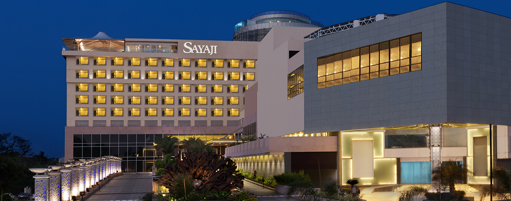

Best Hotels in Kolhapur
Discover the best hotels in our district for your stay.
Featured Hotels

Hotel Sayaji
Sayaji Kolhapur hotel has a Magnificent structure which is considered as the Luxury Hotel in the city & entire southern Maharashtra, Sayaji Kolhapur combines the warm hospitality of Kolhapur with the immaculate service of the Sayaji brand.
View DetailsHotel Ayodhya
The hotel features spacious luxury rooms, multicuisine restaurant, garden cafe, banquet & conference facilities perfect for business or leisure.
View Details